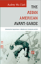
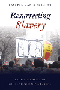
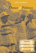
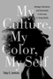
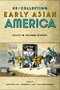
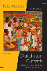
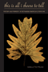
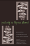
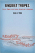

|
Tomboys
A Literary and Cultural History
Abate, Michelle Ann
338 pp • 6x9 • Spring 2008
paper 978-1-59213-723-7
cloth 978-1-59213-722-0
|
|
Rave Culture
The Alteration and Decline of a Philadelphia Music Scene
Anderson, Tammy L.
240 pp • 6x9 • Spring 2009
paper 978-1-59213-934-7
cloth 978-1-59213-933-0
|
|
Hitler's
Heroines
Stardom and Womanhood in Nazi Cinema
Ascheid, Antje
288 pp • 6x9 • Fall 2002
paper 978-1-56639-984-5
cloth 978-1-56639-983-8
|
|
Philadelphia Freedoms
Black American Trauma, Memory, and Culture after King
Awkward, Michael
264 pp • 6x9 • Fall 2013
paper 978-1-4399-0709-2
cloth 978-1-4399-0708-5 |
| |
The Strange Music of Social Life
A Dialogue on Dialogic Sociology
Bell, Michael Mayerfeld, edited by Ann Goetting 248 pp • 5.5x8.25 • Spring 2011
paper 978-1-4399-0724-5
cloth 978-1-4399-0723-8
|
|
Reading Up
Middle-Class Readers and the Culture of Success in the Early Twentieth-Century United States
Blair, Amy L.
264 pp • 6x9 • Fall 2011
paper 978-1-4399-0668-2
cloth 978-1-4399-0667-5
|
|
Cleavage Politics and the Populist Right
The New Cultural Conflict in Western Europe
Bornschier, Simon
260 pp • 6x9 • Spring 2010
cloth 978-1-4399-0192-2
|
|
Invasion of the Mind Snatchers
Television's Conquest of America in the Fifties
Burns, Eric
352 pp • 6x9 • Fall 2010
cloth 978-1-4399-0288-2
|

|
Caribbean Migration to Western Europe and the United States
Essays on Incorporation, Identity, and Citizenship
edited by Cervantes-Rodriguez, Margarita, Ramon Grosfoguel and Eric Mielants
270 pp • 6x9 • Fall 2008
cloth 978-1-59213-954-5
|

|
The Asian American Avant-Garde
Universalist Aspirations in Modernist Literature and Art
Clark, Audrey Wu
246 pp • 6x9 • Fall 2015
paper 978-1-4399-1227-0
cloth 978-1-4399-1226-3 |
|
Ball Don't Lie!
Myth, Genealogy, and Invention in the Cultures of Basketball
Colás, Yago
228 pp • 6x9 • Spring 2016
paper 978-1-4399-1243-0
cloth 978-1-4399-1242-3
|
|
Literary Gestures
The Aesthetic in Asian American Writing
edited by Davis, Rocío G. and Sue-Im Lee
248 pp • 6x9 • Fall 2005
paper 978-1-59213-365-9
cloth 978-1-59213-364-2
|
|
Dream Machine
Realism and Fantasy in Hindi Cinema
Dayal, Samir 320 pp • 6x9 •
Fall 2015
paper 978-1-4399-1064-1
cloth 978-1-4399-1063-4 |

|
Captain America and the Nationalist Superhero
Metaphors, Narratives, and Geopolitics
Dittmer, Jason
242 pp • 6x9 • Fall 2012
paper 978-1-4399-0977-5
cloth 978-1-4399-0976-8
|
|
Identifying Consumption
Subjects and Objects in Consumer Society
Dunn, Robert G.
248 pp • 5.5x8.25 • Spring 2008
paper 978-1-59213-870-8
cloth 978-1-59213-869-2
|
|
Treacherous Subjects
Gender, Culture, and Trans-Vietnamese Feminism
Duong, Lan P.264 pp • 6x9 • Spring 2012
paper 978-1-4399-0178-6
cloth 978-1-4399-0177-9
|
|  |
Resurrecting Slavery
Racial Legacies and White Supremacy in France
Fleming, Crystal Marie
286 pp • 6x9 • Fall 2016
paper 978-1-4399-1409-0
cloth 978-1-4399-1408-3 |

|
Resisting Work
The Corporatization of Life and Its Discontents
Fleming, Peter
210 pp • 5.5x8.25 • Spring 2014
paper 978-1-4399-1113-6
cloth 978-1-4399-1112-9 |
|
Transient Images
Personal Media in Public Frameworks
Freedman, Eric
230 pp • 6x9 • Fall 2010
paper 978-1-4399-0327-8
cloth 978-1-4399-0326-1
|
|
Reverse Engineering Social Media
Software, Culture, and Political Economy in New Media Capitalism
Gehl, Robert W.
226 pp • 5.5x8.25 • Spring 2014
paper 978-1-4399-1035-1
cloth 978-1-4399-1034-4 |
|
Ladies and Gents
Public Toilets and Gender
edited by Gershenson, Olga, Barbara Penner
262 pp • 6x9 • Spring 2009
paper 978-1-59213-940-8
cloth 978-1-59213-939-2
|
 |
The Dance of Politics
Gender, Performance, and Democratization in Malawi
Gilman, Lisa
268 pp • 6x9 • Spring 2009
paper 978-1-59213-986-6
cloth 978-1-59213-985-9
|
|
The Eternal Present of Sport
Rethinking Sport and Religion
Grano, Daniel A.
288 pp • 6x9
• Spring 2017
paper 978-1-4399-1280-5
cloth 978-1-4399-1279-9
|
|
Oral History and Public Memories
edited by Hamilton, Paula and Linda Shopes
320 pp • 6x9 • Spring 2008
paper 978-1-59213-141-9
cloth 978-1-59123-140-2
|
|
Exploring the Roots of Digital and Media Literacy through Personal Narrative
edited by Hobbs, Renee
226 pp • 5.5x8.25 • Spring 2016
paper 978-1-4399-1158-7
cloth 978-1-4399-1157-0
|
|
The Story Is True
The Art and Meaning of Telling Stories
Jackson, Bruce
256 pp • 5.5x8.25 • Spring 2007
paper 978-1-59123-607-0
cloth 978-1-59123-606-3
|

|
My Culture, My Color, My Self
Heritage, Resilience, and Community in the Lives of Young Adults
Jenkins, Toby S.
204 pp • 6x9 • Spring 2013
paper 978-1-4399-0830-3
cloth 978-1-4399-0829-7 |

|
Intimacy across Borders
Race, Religion, and Migration in the U.S. Midwest
Juffer, Jane
204 pp • 5.5x8.25 • Spring 2013
paper 978-1-4399-1053-5
cloth 978-1-4399-1052-8
|
|
Hybridity,
or the Cultural Logic of Globalization
Kraidy, Marwan M.
240 pp • 6x9 • Spring 2005
paper 978-1-59213-144-0
cloth 978-1-59213-143-3
|
|
Multiple
Modernities
Cinemas and Popular Media in Transcultural East Asia
edited by Lau, Jenny Kwok Wah
264 pp • 7x10 • Fall 2002
paper 978-1-56639-986-9
cloth 978-1-56639-985-2
|
 |
Re/collecting
Early Asian America
Essays in Cultural History
edited by Lee, Josephine, Imogene L. Lim and Yuko Matsukawa
384 pp • 7x10 • Spring 2002
paper 978-1-56639-964-7
cloth 978-1-56639-963-0
|

|
Transnational
Asian American Literature
Sites and Transits
edited by Lim, Shirley Geok-lin, John Blair Gamber, Stephen
Hong Sohn and Gina Valentino
320 pp • 6x9 • Fall 2005
paper 978-1-59213-451-9
cloth 978-1-59213-450-2
|
|
Demanding Respect
The Evolution of the American Comic Book
Lopes, Paul
260 pp • 6x9 • Spring 2009
paper 978-1-59213-443-4
cloth 978-1-59213-442-7
|

|
Sounds of the Modern Nation
Music, Culture, and Ideas in Post-Revolutionary Mexico
Madrid, Alejandro L.
224 pp • 5.25x8.25• Fall 2008
cloth 978-1-59213-694-0
|
|  |
Caribbean
Currents
Caribbean Music from Rumba to Reggae
Third Edition
Manuel, Peter with Michael Largey
338
pp • 6x9 • Fall 2016
paper 978-1-4399-1400-7
cloth 978-1-4399-1399-4
|
|
Knowledge LTD
Toward a Social Logic of the Derivative
Martin, Randy
264 pp • 6x9 • Spring 2015
paper 978-1-4399-1224-9
cloth 978-1-4399-1223-2
|
|
Forms
in the Abyss
A Philosophical Bridge between Sartre and Derrida
Martinot, Steve
320 pp • 6x9 • Spring 2006
paper 978-1-59213-440-3
cloth 978-1-59213-439-7
|
|
Serial Fu Manchu
The Chinese Supervillain and the Spread of Yellow Peril Ideology
Mayer, Ruth
216 pp • 6x9 • Fall 2013
paper 978-1-4399-1056-6
cloth 978-1-4399-1055-9 |
|
Blow Up the Humanities
Miller, Toby
172 pp • 5.5x8.25 • Fall 2012
paper 978-1-4399-0983-6
cloth 978-1-4399-0982-9
|
|
The NFL
Critical and Cultural Perspectives
edited by Oates, Thomas P. and Zack Furness
Foreword by Michael Oriard
256 pp • 6x9 • Spring 2014
paper 978-1-4399-0958-4
cloth 978-1-4399-0957-7 |
|
Music and Social Change in South Africa
Maskanda Past and Present
Olsen, Kathryn
222 pp • 6x9 • Fall 2014
cloth 978-1-43991-136-5 |
 |
This Is All I Choose to Tell
History and Hybridity in Vietnamese American Literature
Pelaud, Isabelle Thuy
216 pp • 5.5x8.25 • Fall 2010
paper 978-1-4399-0217-2
cloth 978-1-4399-0216-5
|
|
Cinemas in Transition in Central and Eastern Europe after 1989
edited by Portuges, Catherine, and Peter Hames
288 pp • 6x9 • Fall 2012
cloth 978-1-59213-265-2 |
 |
Consuming Catastrophe
Mass Culture in America's Decade of Disaster
Recuber, Timothy
212 pp • 5.5x8.25 • Fall 2016
paper 978-1-4399-1370-3
cloth 978-1-4399-1369-7
|
|
Fashioning Diaspora
Beauty, Femininity, and South Asian American Culture
Reddy, Vanita
280 pp • 6x9 • Spring 2016
paper 978-1-4399-1155-6
cloth 978-1-4399-1154-9
|
|
Israel's Dead Soul
Salaita, Steven
176 pp • 5.5x8.25 • Spring 2011
paper 978-1-4399-0638-5
cloth 978-1-4399-0637-8
|

|
Customizing
the Body
The Art and Culture of Tattooing
Sanders,
Clinton R. and D. Angus Vail
Revised and Expanded Edition
280 pp • 5.5x8.25 • Spring 2008
paper 978-1-59213-888-3
cloth 978-1-59213-887-6
|
|
Racial Feelings
Asian America in a Capitalist Culture of Emotion
Santa Ana, Jeffrey
272 pp • 6x9
• Spring 2015
paper 978-1-4399-1193-8
cloth 978-1-4399-1192-1 |
|
Global Television
Co-Producing Culture
Selznick, Barbara J.
224 pp • 5.5x8.25 • Spring 2008
paper 978-1-59213-504-2
cloth 978-1-59213-503-5
|
|
The Renewal of Cultural Studies
edited by Smith, Paul
272 pp • 6x9 • Fall 2011
paper 978-1-4399-0253-0
cloth 978-1-4399-0252-3
|
|
Sweating Saris
Indian Dance as Transnational Labor
Srinivasan, Priya
238 pp • 6x9 • Fall 2011
paper 978-1-4399-0430-5
cloth 978-1-4399-0429-9
|
|
Masters
of the Sabar
Wolof Griot Percussionaists of Senegal
Tang, Patricia
Includes CD
224 pp • 6x9 • Fall 2006
paper 978-1-59213-420-5
cloth 978-1-59213-419-9
|
 |
Positively
No Filipinos Allowed
Building Communities and Discourse
edited by Tiongson, Antonio T., Jr., Edgardo V. Gutierrez and
Ricardo V. Gutierrez, foreword by Lisa Lowe
272 pp • 6x9 • Fall 2005
paper 978-1-59213-122-8
cloth 978-1-59213-121-1
|
|
Sync
Stylistics of Hieroglyphic Time
Tobias, James
304 pp • 6x9 • Spring 2010
cloth 978-1-4399-0201-1
|
|
Feminism and Affect at the Scene of Argument
Beyond the Trope of the Angry Feminist
Tomlinson, Barbara
288 pp • 6x9 • Spring 2010
paper 978-1-4399-0247-9
cloth 978-1-4399-0246-2
|
 |
Unquiet Tropes
Form, Race, and Asian American Literature
Tsou, Elda E.
224 pp • 5.5x8.5 • Spring 2015
paper 978-1-4399-1125-9
cloth 978-1-4399-1124-2 |
|
Workers of the World, Enjoy!
Aesthetic Politics from Revolutionary Syndicalism to the Global Justice Movement
Tucker Jr., Kenneth H.
224 pp • 5.5x8.25 • Spring 2010
paper 978-1-59213-765-7
cloth 978-1-59213-764-0
|
|
The
Scrapbook in American Life
edited by Tucker, Susan, Katherine Ott and Patricia P. Buckler
344 pp • 7x10 • Spring 2006
paper 978-1-59213-478-6
cloth 978-1-59213-477-9
|
|
Contemporary Social Constructionism
Key Themes
Weinberg, Darin
214 pp • 5.5x8.25 • Spring 2014
paper 978-1-4399-0925-6
cloth 978-1-43990-924-9
|
|
Inner Speech and the Dialogical Self
Wiley, Norbert
218 pp • 6x9 • Spring 2016
paper 978-1-4399-1328-4
cloth 978-1-4399-1327-7
|